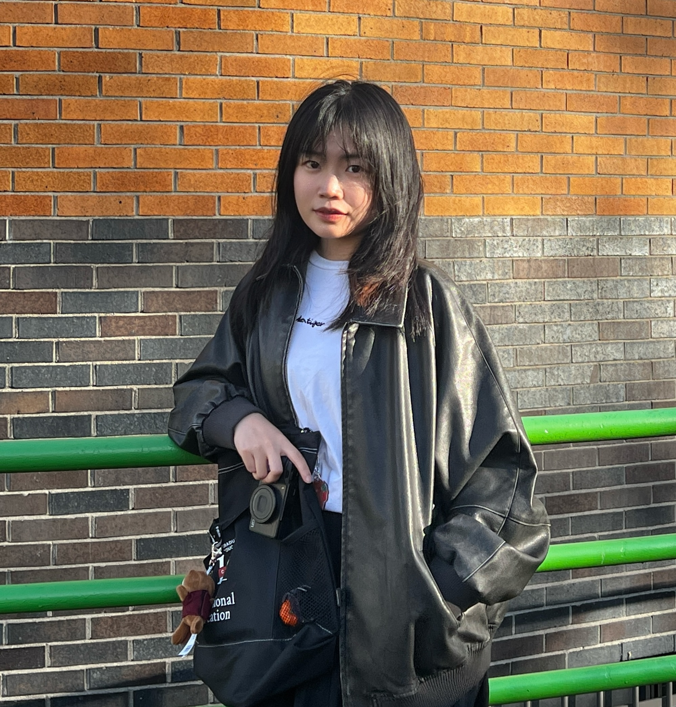

Yan Feng
but doesn’t put it right in its nest.” — Josiah Gilbert Holland
My research examines how postsecondary institutions design and implement policies that shape the teaching and learning environment, and how these policies affect student academic and labor market outcomes.
Across projects, including the effects of condensed course formats in the Virginia Community College System, course modality and transfer student outcomes in undergraduate business administration, and the design of behavioral interventions for college STEM students, my work combines analyses of large-scale administrative data with design-based research to estimate causal effects and examine underlying mechanisms.
I am also attentive to how educational technology and AI are changing how institutions teach and students learn.
Mixed methods & qualitative analysis
Learning analytics & survey design Based Irvine, California
Teaching
Honors & Awards
Thoughts on the work, a question, an introduction, or just hello — whatever you’d like to share. Messages arrive directly in my email; I read every one.